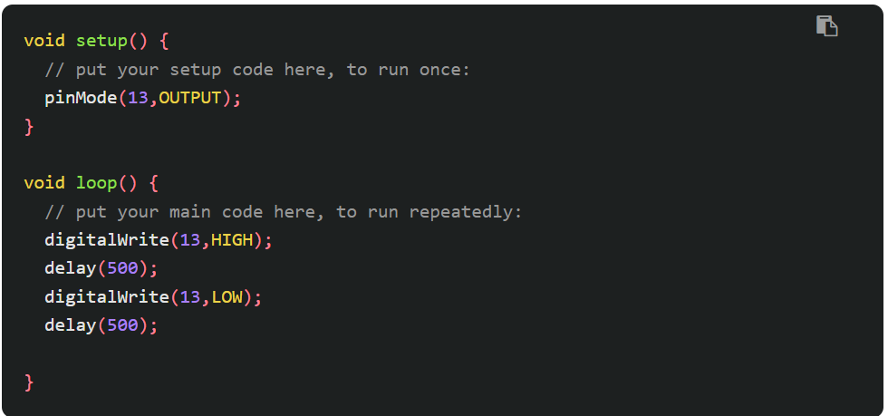
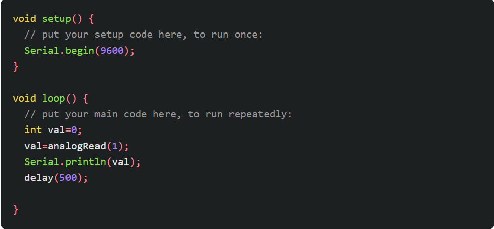

第1回
Arduinoとは
電子工作やロボット制御ができるように作られた、初心者向けのコンピューター基板。
Arduinoは主に「ハードウェア」と「ソフトウェア」の2つから成り立つ。
ハードウェア（基板）：マイコン（マイクロコンピュータ）が載った板。センサーやスイッチを繋ぐ。
ソフトウェア（Arduino IDE）：パソコンでプログラムを書き、Arduinoに送り込むための専用ソフト。
Lチカ
Lチカを行うことにより、回路、電源、プログラム、書き込み、これら全てが正常なことが確認できる。
そのため、Lチカは電子工作の基礎となる。
回路：LEDの向きやピン番号。
電源：給電されているか、適切な電圧か。
プログラム：HIGH、LOWが書けているか、待機時間は十分か。
書き込み：ポートは正しいか。
などといった確認が必要なため。

setup()：電源を入れた直後、1回だけ実行。
loop()：setupの後、繰り返し実行。
pinmode(13,output);：13番ピンを出力に設定
digitalWrite(13,HIGH);：13番ピンの電圧をHIGH（高い）にし、LOWは反対に低くする。
delay(500);：500ミリ秒の間、プログラムを一時停止する。
明るさ測定
デジタルの世界はオンかオフしかないのに対して、アナログは連続した値の世界。
Cdsセルは光の強さによって抵抗値が変わる部品。明るい時に小さくなり、暗くなると大きくなる。

Serial.bigin(9600);：通信速度を設定し、通信を開始。
int val=0;：変数valを用意し、初期値としての0。
val=analogRead(1)：A1ピンの電圧を読み取り、valに代入。
Serial.printli(val);：valの中身をシリアルモニタに表示し、改行する。
振り返り
なんとかLEDライトを明るさに合わせて動作させることができました。
電子工作は覚えることが多く難しいですが、扱っていくうちに徐々に慣れていきたいです。